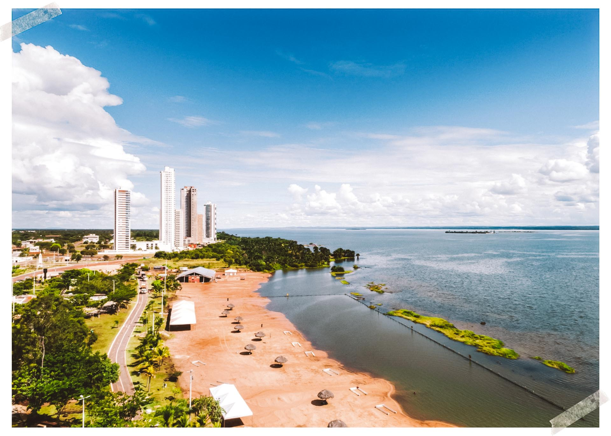

Tocantins é um estado localizado na região Norte do Brasil, com capital em entity["city","Palmas","capital de Tocantins"]. É o estado mais novo do país, criado em 1988. Sua economia é baseada na agropecuária, no comércio e nos serviços. O estado faz parte do Cerrado brasileiro e é conhecido por suas paisagens naturais, rios e pelo turismo ecológico.
